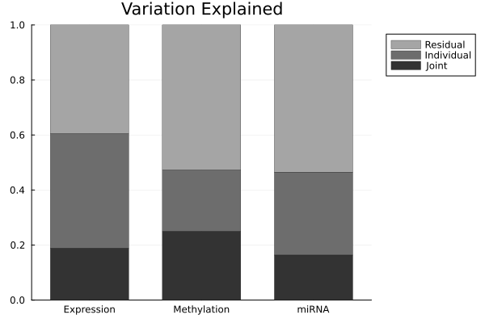
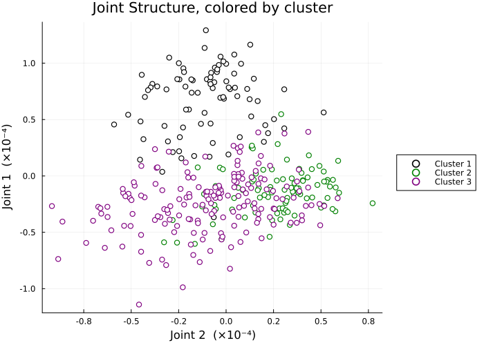
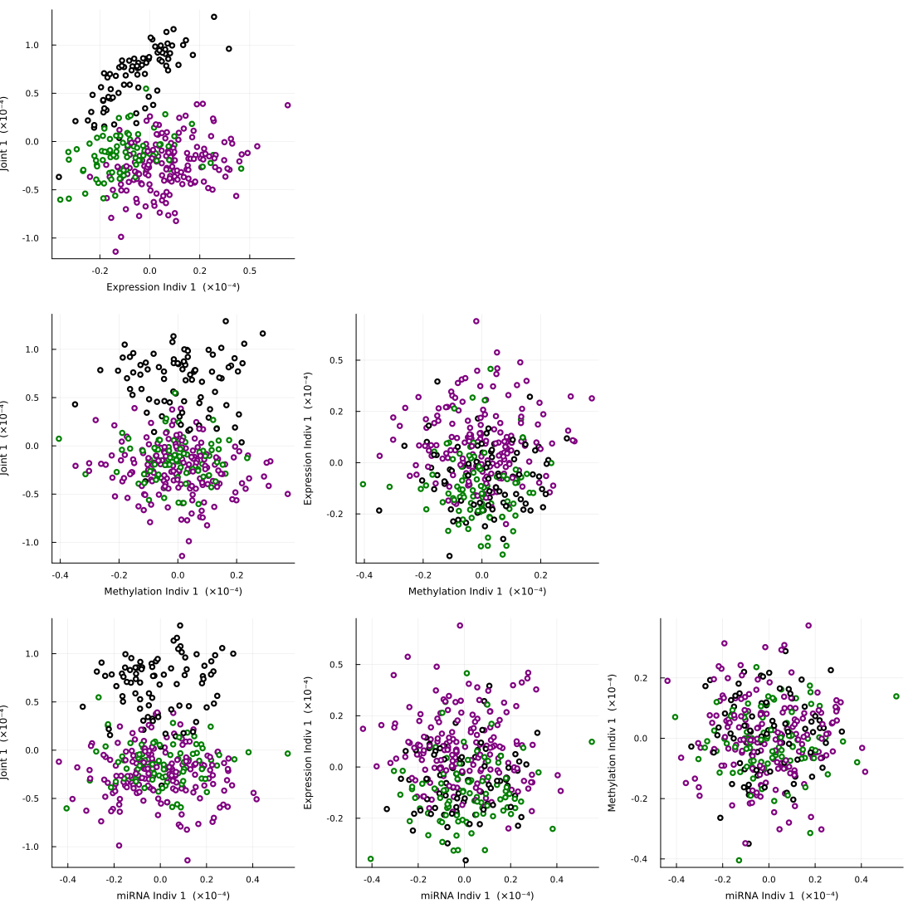

JIVE: Joint and Individual Variation Explained
Joint and Individual Variation Explained or JIVE is a matrix decomposition technique. If we have several blocks of data sharing the same observations, IVE decomposes them into three parts: a joint structure which is common to all blocks, an individual structure which is specific to each block, and residual noise. The main goal of JIVE is to separate the variation the measurements share from the variation unique to each.
In this documentation, we will reproduce the analysis from the r.jive package vignette using BigRiverEssence.jive where we will consider three genomic data blocks (gene expression, methylation, and miRNA) measured on the same breast cancer tumor samples and we will decomposed into their joint and individual structure.
The method
Let us consider $k$ data blocks $X_1, \dots, X_k$. Each of the data blocks have the same $n$ samples but with different features (so $X_i$ is $p_i \times n$). We can obtain total variation by stacking them. JIVE splits each block as $X_i = J_i + A_i + \varepsilon_i,$ where $J_i$ is the joint structure, $A_i$ the individual structure, and $\varepsilon_i$ is the noise. The joint structures $J_1, \dots, J_k$ share a common row space where a set of $r$ patterns across samples that appear in every block, whereas each individual structure $A_i$ lies in a space orthogonal to the joint one, capturing what is specific to block $i$.
Similar to r.jive, BigRiverEssence.jive finds this decomposition by alternating between two steps. Given the individual structures, the joint structure can be considered as the ranked $r$ approximation of the stacked residual (which is data minus individual). Now, given the joint structure, individual structure of each block is the ranked $r_i$ approximation of residual of that block, projected off the joint row space and off the other blocks' individual spaces. it iterates between these two estimates untill convergence, following the "orthIndiv" algorithm of Lock et al. (2013).
The joint rank $r$ and individual ranks $r_i$ can either be supplied directly or they can also be estimated from the data by a permutation test where we consider a componet as a real signal only if the singular value of that component exceeds what is seen after randomly permuting the data to destroy structure.
The data
We will consider the BRCA dataset. The BRCA dataset contains gene expression (654 genes), DNA methylation (574 CpG sites), and miRNA expression (423 miRNAs) measured on the same 348 breast tumor samples from The Cancer Genome Atlas [1]. It is obtained via the r.jive R package [3], which implements the JIVE method [2].
using BigRiverEssence, Plots, StatsPlots, Clustering, Distances
using LinearAlgebra, Statistics, DelimitedFiles, Randomdatadir = joinpath(pkgdir(BigRiverEssence), "reference_Data", "brcadata")
X1 = readdlm(joinpath(datadir, "expression.csv"), ',', Float64) # Expression block
X2 = readdlm(joinpath(datadir, "methylation.csv"), ',', Float64) # Methylation block
X3 = readdlm(joinpath(datadir, "mirna.csv"), ',', Float64) # miRNA block
cl = Int.(vec(readdlm(joinpath(datadir, "clusts.csv"), ','))) # cluster labels
nm = ["Expression", "Methylation", "miRNA"]
size.((X1, X2, X3), 1), size(X1, 2) # features per block, shared sample count((645, 574, 423), 348)We see from the above output that, each block has the same number of columns or columns but a different number of rows or features. This is the exact layout jive expects where each block is a $p_i \times n$ matrix, sharing $n$.
Fitting the model
Now we fit jive by passing the three blocks with specifying the ranks. This lets jive estimate the ranks by permutation test.
Random.seed!(1234)
res = jive([X1, X2, X3])
rJ = res.r
println("Estimated ranks: joint = $rJ, individual = $(res.ri)")Estimating ranks via permutation test...
Estimated joint rank: 2, individual ranks: [27, 26, 25]
Estimated ranks: joint = 2, individual = [27, 26, 25]We note that the permutation test finds a joint rank of $2$ which implies that two patterns are shared across all the three data types. We also found that the individual ranks are in the mid-$20$s for each block. The returned Jive holds the joint (J, S, U) and individual (A, Si, Wi) parts along with the ranks.
Preparing for the figures
We scale the data for the variance and heatmap figure exactly as jive scales it internally (row-centered, then Frobenius-normalized so no block dominates).
nel = [size(X, 1) * size(X, 2) for X in (X1, X2, X3)]; sum_n = sum(nel)
Dat = [ let Xi = X .- mean(X, dims = 2); Xi ./ (norm(Xi) * sqrt(sum_n)); end
for X in (X1, X2, X3) ]
clusters = Int.(cl)
pal = [:black, :green, :purple]
colors = [pal[c] for c in clusters]348-element Vector{Symbol}:
:green
:green
:black
:black
:green
:black
:black
:purple
:purple
:purple
⋮
:green
:purple
:black
:green
:green
:black
:green
:green
:purpleThe variation explained
Now we measure the fraction of the variance captured by the joint structure, the individual structure, and left as residual for each block. We plot them as a stacked bar plot.
VarJ = [norm(res.J[i])^2 / norm(Dat[i])^2 for i in 1:3]
VarI = [norm(res.A[i])^2 / norm(Dat[i])^2 for i in 1:3]
VarR = 1 .- VarJ .- VarI
fig1 = groupedbar(nm, [VarR VarI VarJ];
bar_position = :stack,
label = ["Residual" "Individual" "Joint"],
color = [RGB(0.65,0.65,0.65) RGB(0.43,0.43,0.43) RGB(0.2,0.2,0.2)],
title = "Variation Explained", legend = :outertopright,
lw = 0.3, linecolor = :black, bar_width = 0.7, ylims = (0,1))
In the above bar plot, each bar shows how variation of one block divides between shared (joint), block-specific (individual), and noise. This is the main result of JIVE which shows how much of each data type is explained by structure common to all three versus structure unique to itself.
Heatmaps: Data = Joint + Individual + Noise
Now we visualize the decomposition directly by displaying each block as the original data along with the joint, individual, and noise components. We order samples by clustering their joint structure, so shared patterns line up across all three blocks.
Jstack = vcat(res.J...)
col_order = hclust(pairwise(Euclidean(), Jstack, dims = 2), linkage = :complete).order
row_orders = [hclust(pairwise(Euclidean(), res.J[i], dims = 1), linkage = :complete).order
for i in 1:3]
Wlab = 0.05
Wcontent = [0.22, 0.04, 0.22, 0.04, 0.22, 0.04, 0.22]
Wcontent = Wcontent .* (1 - Wlab) # rescale so everything still sums to 1
W = vcat(Wlab, Wcontent) # 8 columns total
function panel(M, ro; title = "")
Mo = M[ro, col_order]
m = mean(Mo); s = std(Mo); lo, hi = m - 3s, m + 3s
heatmap(clamp.(Mo, lo, hi); c = :bwr, clim = (lo, hi), title = title,
cbar = false, xticks = false, yticks = false,
titlefontsize = 11, guidefontsize = 9)
end
function txt(s; fs = 20, rot = 0)
p = plot(framestyle = :none, xlims = (0,1), ylims = (0,1), legend = false)
annotate!(p, 0.5, 0.5, text(s, fs, rotation = rot)); return p
end
function source_row(i)
ro = row_orders[i]
lab = txt(nm[i]; fs = 14, rot = 90) # vertical block name, far left
D = panel(Dat[i], ro)
J = panel(res.J[i], ro)
A = panel(res.A[i], ro)
N = panel(Dat[i] .- res.J[i] .- res.A[i], ro)
plot(lab, D, txt("="), J, txt("+"), A, txt("+"), N;
layout = grid(1, 8, widths = W), size = (1500, 300))
end
header = plot(txt(""), txt("Data"; fs=16), txt(""), txt("Joint"; fs=16), txt(""),
txt("Individual"; fs=16), txt(""), txt("Noise"; fs=16);
layout = grid(1, 8, widths = W), size = (1500, 60))
fig2 = plot(header, source_row(1), source_row(2), source_row(3);
layout = grid(4, 1, heights = [0.08, 0.307, 0.307, 0.306]), size = (1500, 950))
Joint structure by cluster
Now, we project the joint structure onto its principal components and color by the sample clusters. This shows us whether the shared variation separates the known tumor subtypes.
Fj = svd(vcat(res.J...))
fmt = v -> string(round(v * 1e4, digits = 1))
PCs = Diagonal(Fj.S[1:rJ]) * Fj.Vt[1:rJ, :]
# plot each cluster as its own labeled series, so the legend maps color → cluster
fig3 = plot(; xlabel = "Joint 2 (×10⁻⁴)", ylabel = "Joint 1 (×10⁻⁴)",
title = "Joint Structure, colored by cluster",
legend = :outerright, size = (700, 500),
xformatter = fmt, yformatter = fmt)
cluster_ids = sort(unique(clusters))
for (i, c) in enumerate(cluster_ids)
idx = clusters .== c
scatter!(fig3, PCs[2, idx], PCs[1, idx];
color = pal[c], markershape = :circle, markersize = 4,
markerstrokewidth = 1.2, markerstrokecolor = pal[c], markercolor = :white,
label = "Cluster $c")
end
fig3
We can see from the above plot, the joint structures (the variation shared across expression, methylation, and miRNA) were able to separate the sample clusters. This shows that the tumor subtypes differ in ways that are consistently reflected across all three molecular data types.
Joint and individual components together
Now we construct a matrix of scatterplots where in each of them, we plot the first joint component against the first individual component of each block. This will shows us how joint and block-specific structure relate.
j1 = (Diagonal(Fj.S[1:1]) * Fj.Vt[1:1, :])[1, :]
ind1 = [ (let F = svd(res.A[i]); (Diagonal(F.S[1:1]) * F.Vt[1:1, :])[1, :]; end)
for i in 1:length(res.A) ]
comps = [j1, ind1...]
names4 = ["Joint 1"; ["$(nm[i]) Indiv 1" for i in 1:length(ind1)]]
nPC = length(comps)
panels = Matrix{Any}(undef, nPC-1, nPC-1)
for i in 2:nPC, j in 1:(nPC-1)
r = i-1; c = j
if j >= i
panels[r,c] = plot(framestyle = :none)
else
panels[r,c] = scatter(comps[i], comps[j];
color = colors, markershape = :circle, markersize = 3,
markerstrokewidth = 1.0, markerstrokecolor = colors, markercolor = :white,
xlabel = "$(names4[i]) (×10⁻⁴)", ylabel = "$(names4[j]) (×10⁻⁴)",
xformatter = fmt, yformatter = fmt,
legend = false, tickfontsize = 7, guidefontsize = 8)
end
end
fig4 = plot(permutedims(panels)...; layout = (nPC-1, nPC-1), size = (1100, 1100))
We note in the above plot, the joint component is able to separats the clusters (as we saw in Figure 3), while the individual components are able to capture the block-specific variation. This portrays the distinction JIVE draws between shared and unique structure.
Summary
We saw in this example, given three molecular data blocks on the same tumor samples, jive estimated a joint rank of 2 and separated each block into shared structure, block-specific structure, and noise. The joint structure recovered variation reflected across all three data types, while the individual structures isolated what is unique to each. This reproduced the analysis of the r.jive vignette, on the same data.
References
[1] Cancer Genome Atlas Network (2012). Comprehensive molecular portraits of human breast tumours. Nature, 490(7418), 61–70.
[2] Lock, E. F., Hoadley, K. A., Marron, J. S., & Nobel, A. B. (2013). Joint and Individual Variation Explained (JIVE) for integrated analysis of multiple data types. The Annals of Applied Statistics, 7(1), 523–542.
[3] O'Connell, M. J., & Lock, E. F. (2020). r.jive: Perform JIVE Decomposition for Multi-Source Data. 10.32614/CRAN.package.r.jive